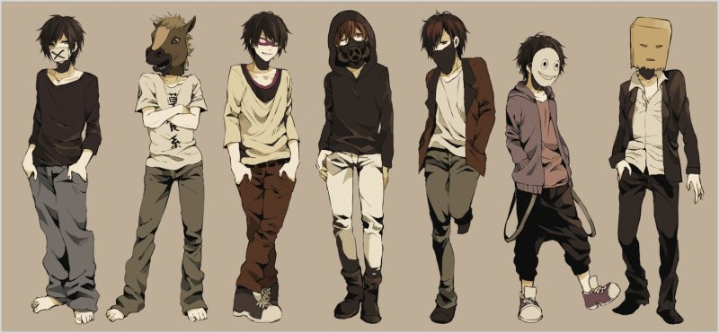
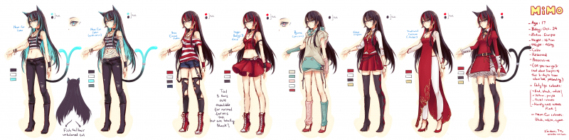
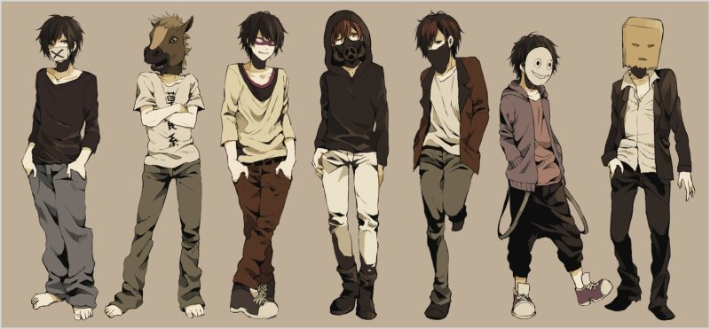
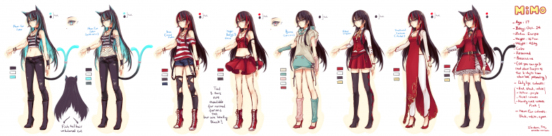

На даному сайті ти зможеш переглянути нові аніме в Ураїнськії озвці
Nandemo Wa Shiranai Wa Yo. Shitteru Koto Dake
Я не знаю всього, я знаю лише те, що знаю
Ви знаєте Цубасу Ханекаву, вона є головним героєм серії Моногатарі. Цей серіал вважається одним із найбільш насичених діалогами аніме. Знову ж таки, шанувальників аніме найбільше приваблює серіал через його оповідання, взаємодію персонажів та розвиток персонажів. У цьому аніме-серіалі є найвідоміша фраза, яку промовила Цубаса Ханекава.
何でもは知らないわよ、知ってる事だけ
omae wa mou shindeiru
Ти вже мертвий
Ця фраза з аніме "Кулак полярної зірки" Omae wa mou shindeiru (омае ва мо шиндейру) перекладається як "Ти вже мертвий". Саме цей мем пішов з одного епізоду в якому головний герой каже цю фразу вбиваючи свого ворога, ворог каже "Нані???" (у перекладі означає "Що? Чого?").
お前はもう死んでいる
Yare yare daze
Чіткого перекладу не має!
Коронна репліка героя манги та аніме JoJo's Bizarre Adventures (“Неймовірні пригоди ДжоДжо”) Джотаро Куджо. Залежно від контексту та інтонації вираз може передавати почуття втоми, зневаги, розчарування чи роздратування. Фраза часто з'являється у пов'язаних з JoJo мемах та обговореннях.
やれやれだぜ
sen mainasu senbun
1000-7
Ця фраза належить Якумо Оморі, який катував Канекі. Перекладається вона як 1000-7, він казав так, щоб Канекі думав і йому було боляче. Після Канекі вибрався і з'їв його живим повторюючи цю фразу.
何が千ミヌスセブ
Shi wa shinsekai no kami ni nari
Я стану Богом нового світу
Фраза Ягамі Лайта з аніме зошит смерті. Вона означає - "Я стану Богом нового світу".
私は新世界の神になります
Shi haana ta ni ichiman pastento o taeru
Даю десять тисяч відсотків
Улюблена фраза Сенку з аніме "Доктор Стоун", яка перекладається як Даю десять тисяч відсотків. Він використовує її у суперечках і для того, щоб запевнити всіх у своєму успіху.
私はあなたに一万パーセントを与える
Orewa kaizoko ninaru
Я стану Королем Піратів!
Безмовна фраза Луффі (One Piece), яка перекладається: Я стану Королем Піратів!
私は海賊王になるでしょう